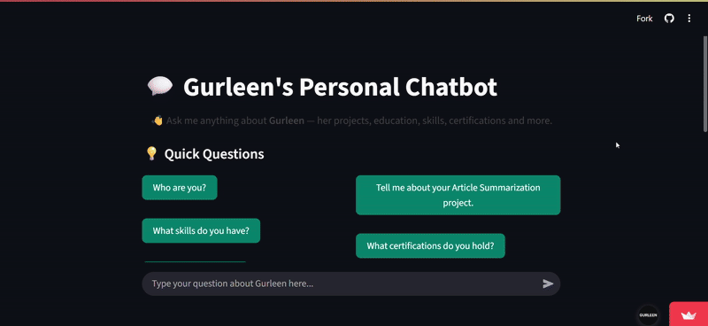
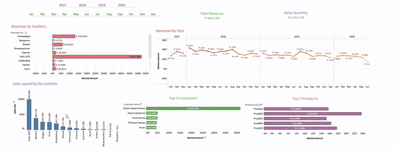
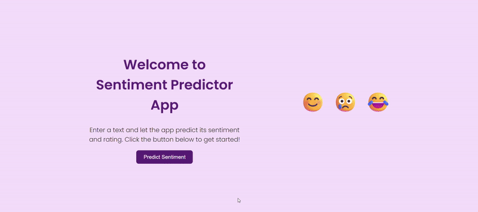

My Projects
🔍 IPCheck – Suspicious IP Tracker on World Map

Description:
- ⚡Built a FastAPI backend powered by a trained Random Forest ML model to predict IP risk levels.
- 🌍Designed a React frontend for CSV uploads, AI result visualization, and an interactive world map of flagged IPs.
- 🚀Deployed the backend on Render and frontend on Vercel with secure CORS handling & environment variable setup.
🤖 Personal Chatbot
Description:
- ⚡Developed with SentenceTransformer (all-MiniLM-L6-v2) embeddings + FAISS similarity search.
- 📈Curated a JSON dataset of custom Q&A prompt–response pairs.
- 🔍Integrated an interactive Streamlit chat interface.
📊 Interactive Dashboard
🌐 Dashboard

Description:
- ⚡ Connected, cleaned, and standardized sales data.
- 📈 Revenue analysis and trend visualizations (by market, customer, product).
- 🔍 User-friendly dashboard for data-driven decisions.
💬 Sentiment Analysis
Description:
- 🧠 Developed a NLP-based Sentiment Analysis model using Python
- 📊 Used Hugging Face dataset, strong data preprocessing, and LSTM deep-learning model.
- 🌐 Processed datasets with Pandas & applied text preprocessing.
⚡ Other Projects
💬 Article Summarizer model
This project implements an abstractive text summarization system using a Sequence-to-Sequence (Seq2Seq) model with LSTM-based encoder-decoder architecture.
🩺 Diabetes Prediction
Machine learning model that predicts the likelihood of diabetes based on medical input features.
GitHub🖼️ Image Classification
Deep learning project that classifies images into categories using a CNN architecture.
GitHub